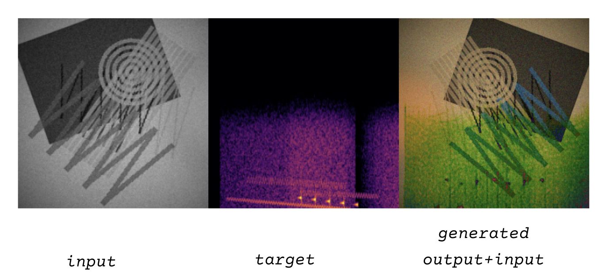
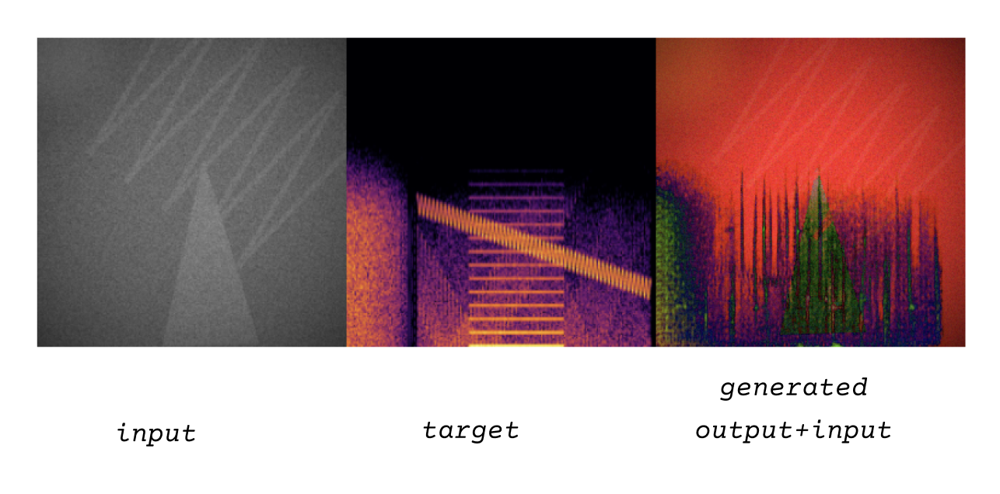
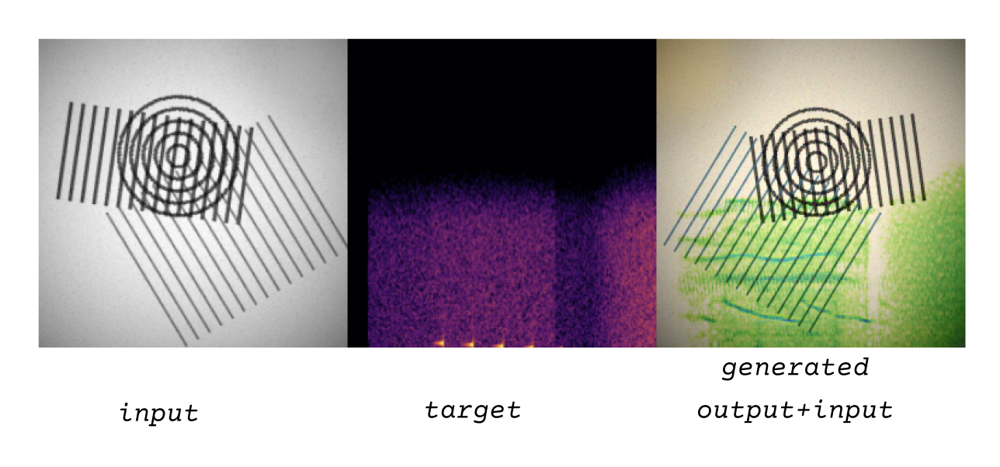

Gustavo Guzmán
I had a bunch of ideas for this project, but the thread that kept pulling everything together was translation. At first it was calligraphy to sound; after all, lettering already feels like a sneaky command toward rhythm, pressure, air. Then I started caring about movement as an inscription: motion traces splattered amidst frames with their own fleeting grammar. Didn’t work. Yet, even when ideas shifted, the question lingered: can a deliberately designed “A” become an interpretable score for “B,” and most importantly, how far can we exploit the bizarro artifacts that would inevitably drip from a convolutional GAN mind?
And so—and in the spirit of early Soviet audio-visual experimenters (Avraamov, Sholpo, etc.)—I built this dataset, inviting for disobedient, misshappened translations. I thus called upon the almighty Suprematist/Constructivist tongue of abstract shapes—turning strict geometry into electronic musical tones—while setting down a rather precarious scaffolding for all manner of uncanny textures, kneaded forever between the eye and the ear and the eye. Wedges hitting saw waves, hatchings into noise clouds, zig-zags à la snakey vibratos, all viceversa’d and plastered into psychedelicy digital mush.


